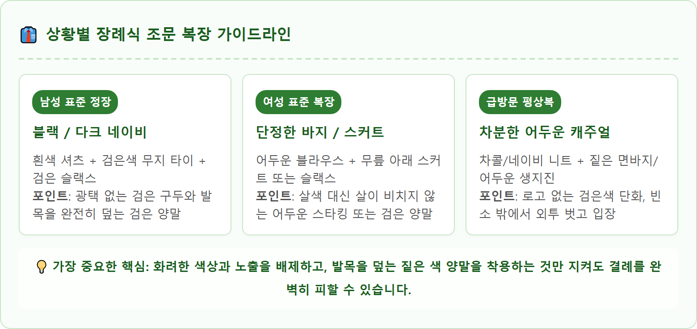
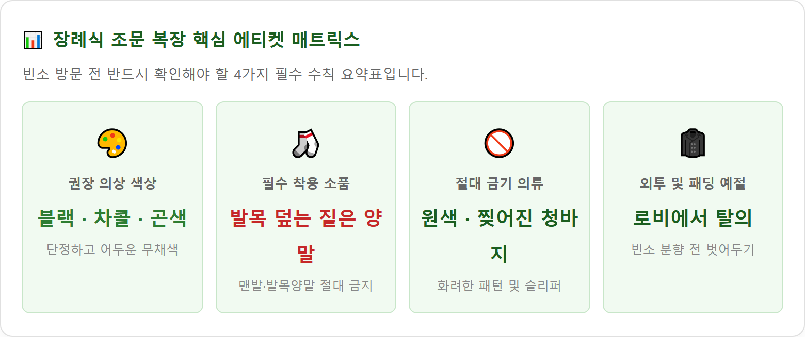

장례식 조문 복장 꼭 검은색 정장이어야 하나 — 남녀 복장 기준과 어두운 평상복·양말 체크리스트
갑작스러운 부고 문자를 받고 장례식장을 찾아야 할 때, 집에 검은색 정장이 없거나 퇴근길에 정장을 챙기지 못해 낭패를 겪는 경우가 많습니다.
현대 장례 예절에서 조문객의 복장은 반드시 검은색 수트(블랙 정장)일 필요는 없습니다. 화려한 원색이나 요란한 무늬를 피하고, 차콜 그레이, 딥 네이비, 다크 브라운 등 차분하고 어두운 무채색 계열의 셔츠·니트와 슬랙스 평상복으로도 고인에 대한 충분한 애도와 유족에 대한 정중한 예의를 표할 수 있습니다.
절을 할 때 맨살이 드러나지 않도록 발목을 덮는 짙은 색 양말(맨발 절대 금지)을 착용하고, 화려한 액세서리와 짙은 향수를 삼가는 등 남녀 조문객이 현관을 나서기 전 꼭 점검해야 할 복장 기준과 실수 예방 체크리스트를 완벽히 정리해 드립니다.

장례식장 조문 시 갖추어야 할 남녀 단정한 어두운 복장과 예절 기준 / AI 제작 이미지
01 | 장례식 조문 복장의 기본 원칙과 검은색 정장 필수 여부
전통 관혼상제 예법에서 상주(喪主)는 삼베옷이나 지정된 상복을 입어야 하지만, 문상객(조문객)에게 요구되는 핵심 예절은 '단정함과 엄숙함'입니다.
많은 사람들이 장례식장에 갈 때는 머리부터 발끝까지 완전한 블랙 정장을 입어야 한다고 생각하지만, 이는 상주 측 직계 가족에게 엄격하게 적용되는 기준입니다.
일반 문상객의 경우 검은색 정장이 있다면 가장 이상적이지만, 정장이 없거나 직장에서 근무 중 급히 빈소를 방문해야 하는 상황이라면 검은색에 준하는 어두운 무채색(차콜, 짙은 곤색, 어두운 갈색) 의류를 단정하게 입는 것만으로도 결례가 되지 않습니다.
유족의 슬픔을 위로하고 고인을 추모하는 자리인 만큼, 시각적으로 튀거나 경박해 보이는 원색(빨강, 노랑, 주황 등)이나 화려한 로고·프린팅만 피한다면 평상복 차림으로도 얼마든지 정중한 조문이 가능합니다.
02 | 남성 조문객 복장 가이드 — 넥타이 색상·셔츠·구두 기준
남성의 경우 몇 가지 핵심 아이템만 신경 쓰면 가장 단정하고 격식 있는 옷차림을 완성할 수 있습니다.
| 의류 품목 |
가장 추천하는 기준 (베스트) |
허용 가능한 대체 복장 |
절대 금지 / 결례 사항 |
| 상의 / 재킷 |
검은색 싱글 수트 재킷 |
다크 그레이, 짙은 네이비 블레이저 또는 단정한 어두운 니트/가디건 |
화려한 체크 패턴, 가죽 재킷, 빨간색/형광색 패딩 |
| 이너 / 셔츠 |
무늬 없는 흰색 드레스 셔츠 |
검은색, 짙은 회색 셔츠 또는 단색 라운드 니트 |
화려한 그래픽 티셔츠, 목이 늘어난 티셔츠, 화려한 줄무늬 |
| 넥타이 |
무광 검은색 무지 넥타이 |
어두운 톤의 짙은 네이비 단색 넥타이 (넥타이 생략 가능) |
밝은 원색 넥타이, 사선 스트라이프 타이, 번쩍이는 광택 타이 |
| 하의 (바지) |
검은색 정장 슬랙스 |
짙은 회색·곤색 정장 바지 또는 짙은 어두운 면바지 |
찢어진 청바지(데미지 진), 카고 바지, 반바지, 트레이닝복 |
| 신발 (구두) |
검은색 가죽 정장 구두 |
로고가 없는 단정한 검은색 스니커즈나 어두운 로퍼 |
슬리퍼, 샌들, 크록스, 화려한 색상의 러닝화 |
👔 넥타이가 없을 때 팁
갑작스러운 조문으로 검은색 넥타이가 없다면, 화려한 유색 넥타이를 매는 것보다 아예 넥타이를 매지 않고 셔츠의 맨 위 단추 하나만 풀고 단정하게 방문하는 것이 훨씬 정중한 예절입니다.

👔 상황별 장례식 조문 복장 가이드라인 / 인포그래픽 카드
03 | 여성 조문객 복장 가이드 — 치마 길이·바지 정장·스타킹 규정
여성의 경우 현대에는 치마 정장보다 편안한 바지 정장(슬랙스)을 착용하는 경우가 훨씬 많아졌습니다. 빈소에서 신발을 벗고 큰절을 하거나 바닥에 앉아 조문을 나누어야 하기 때문입니다.
👗 여성 조문객 복장 필수 체크포인트
• 바지 정장 (가장 추천): 폭이 적당하고 단정한 검은색 또는 짙은 감색 슬랙스에 차분한 셔츠나 니트를 매치하면 활동성과 격식을 모두 챙길 수 있습니다.
• 스커트 착용 시 주의점: 스커트나 원피스를 입는다면 절을 할 때 무릎이 과도하게 드러나지 않도록 무릎을 덮는 미디 길이 이상을 선택해야 합니다. 미니스커트나 타이트한 치마는 절대 피해야 합니다.
• 스타킹과 양말 규정: 맨발 노출은 장례식장에서 가장 큰 결례 중 하나입니다. 치마를 입었을 경우 살색 스타킹보다는 검은색 불투명 스타킹을 착용하는 것이 예의이며, 바지를 입었다면 반드시 발목을 가리는 검은색 양말을 착용해야 합니다.

📊 장례식 조문 복장 핵심 에티켓 매트릭스 / 데이터 요약 카드
04 | 갑작스러운 부고로 정장이 없을 때 — 어두운 평상복 대체 요령
직장에서 퇴근 후 바로 장례식장으로 향하거나 자취방에 정장이 없는 대학생·사회초년생의 경우, 주변 옷가게를 찾지 못해 당황하기 쉽습니다.
이럴 때는 가지고 있는 평상복 중 가장 채도가 낮고 차분한 옷을 조합하면 충분히 조문이 가능합니다.
| 구분 |
단정한 평상복 코디 조합 예시 |
준비 팁 |
| 남성 평상복 대체 |
어두운 톤의 셔츠 또는 검은색/차콜 라운드 니트
+ 어두운 색 슬랙스 또는 워싱 없는 짙은 검은색 면바지 |
점퍼 대신 코트 착용 권장. 화려한 벨트 버클은 상의로 가리기 |
| 여성 평상복 대체 |
단색의 어두운 카디건 또는 니트
+ 통이 넓은 짙은 색 와이드 팬츠나 롱스커트 |
목선이 깊게 파이지 않은 단정한 상의 선택 |
| 급히 구매할 품목 |
편의점 검은색 양말 (필수 구매) |
장례식장 지하 매점이나 편의점에서 1,500~2,000원에 판매 |
05 | 가장 흔히 실수하는 3대 금기 — 맨발 노출·화려한 장신구·향수
조문객들이 무심코 저지르기 쉬운 대표적인 결례 사항 3가지를 반드시 점검해야 합니다.
🚫 장례식장에서 절대 피해야 할 3대 결례
1. 맨발 노출 (발목양말, 덧신, 샌들): 빈소는 신발을 벗고 들어가는 마루 공간입니다. 여름철에 샌들이나 슬리퍼를 신고 맨발로 방문하거나, 바지 밑단 위로 맨살이 훤히 드러나는 덧신(페이크 삭스)을 신고 절을 하는 것은 유족에게 큰 결례입니다. 반드시 복숭아뼈를 덮는 짙은 색 양말을 착용해야 합니다.
2. 화려하고 소리 나는 장신구: 반짝이는 큰 귀걸이, 큐빅 목걸이, 찰랑거리는 금팔찌는 분향과 절을 할 때 시선을 분산시키고 소음을 유발합니다. 시계와 반지도 가급적 가방에 넣어두는 것이 좋습니다.
3. 짙은 향수와 화려한 메이크업: 향수 냄새는 향 연기가 가득한 빈소의 엄숙한 분위기를 해칩니다. 여성의 경우 진한 레드 립스틱이나 펄 섀도를 피하고, 피부톤만 정돈하는 수수한 내추럴 메이크업이 바람직합니다.
06 | 계절별 조문 의상 팁 — 여름철 반소매와 겨울철 두꺼운 패딩 예절
계절에 따라 날씨가 덥거나 추울 때 복장 매너를 지키는 요령입니다.
• 여름철 (폭염기): 너무 더운 날씨에는 깃이 있는 단정한 검은색 또는 어두운 남색 반소매 폴로 티셔츠(카라티)에 슬랙스를 착용해도 결례가 아닙니다. 단, 민소매(나시)나 얇은 시스루 소재, 반바지는 어떤 경우에도 허용되지 않습니다.
• 겨울철 (한파기): 두꺼운 롱패딩이나 부피가 큰 헤비 아우터를 입고 방문하는 것은 자연스럽습니다. 단, 빈소 분향실 문을 열고 들어가기 전 로비나 신발장 앞에서 외투를 미리 벗어 팔에 걸쳐두거나 의자에 놓아두는 것이 중요한 예절입니다. 두꺼운 패딩을 입은 채로 영정 앞에 서서 절을 올리는 것은 삼가야 합니다.
07 | 학생 및 청소년 조문 복장 — 교복 착용과 단정한 사복 기준
중·고등학생이나 대학생 청소년이 조문을 갈 때의 복장 기준입니다.
• 중·고등학생: 학교 교복(동복·하복)이 학생 신분에 가장 완벽하고 격식 있는 정장입니다. 교복을 입고 방문하면 그 어떤 명품 정장보다 단정하고 정중한 예의로 인정받습니다.
• 교복이 없거나 주말인 경우: 로고가 없는 검은색이나 회색 후드티, 어두운 맨투맨 티셔츠에 깔끔한 면바지나 청바지(워싱 없는 어두운 단색)를 매치하면 됩니다. 화려한 색상의 모자나 헤드셋은 입장 전 반드시 벗어 가방에 넣으세요.
08 | 빈소 분향실 입장 전 외투 벗는 법과 소지품 정리 요령
옷을 갖춰 입은 후 빈소에 들어서기 직전 마지막 몸가짐을 정돈하는 순서입니다.
🚪 빈소 분향소 입장 직전 30초 체크리스트
1. 휴대폰 무음/진동 전환: 벨소리가 울리는 사고를 방지하기 위해 스마트폰을 완전히 무음 모드로 설정합니다.
2. 외투와 모자 탈의: 코트, 패딩, 모자, 목도리는 신발장 입구 옷걸이에 걸어두거나 로비에 정돈해 둡니다.
3. 양말과 옷매무새 확인: 바지 지퍼가 올라갔는지, 셔츠 깃이 반듯한지, 양말에 구멍이 없거나 흘러내리지 않았는지 거울을 보고 확인합니다.
4. 부의금 봉투 준비: 조객록 서명 전 부의금(축의금 봉투와 달리 謹弔, 賻儀 표기) 봉투에 본인 이름과 소속을 또박또박 적어 안주머니에 준비합니다.
09 | 장례식 조문 복장 최종 점검표 — 현관을 나서기 전 체크리스트
현관을 나서기 전 마지막으로 거울을 보며 체크할 수 있는 자가 점검표입니다.
📋 출발 전 10초 복장 자가 점검표
[ ] 전체적인 옷 색상이 블랙, 차콜, 네이비 등 어두운 톤인가?
[ ] 화려한 원색이나 커다란 브랜드 로고, 캐릭터 무늬가 없는가?
[ ] 발목을 완전히 덮는 짙은 색 양말을 착용했는가? (맨발 절대 금지)
[ ] 바지가 찢어지거나 체인 등 금속 장식이 달려 있지 않은가?
[ ] 화려한 반지, 목걸이, 귀걸이를 빼고 시계는 차분한 디자인인가?
[ ] 여성의 경우 치마 길이가 무릎 아래이며 검은 스타킹을 착용했는가?
[ ] 짙은 향수를 뿌리지 않았으며 메이크업이 과하지 않은가?
#장례식조문복장
#장례식복장예절
#장례식평상복
#조문복장양말
#조문정장없을때
#장례식여성복장
#장례식남성복장
#장례식넥타이
#장례식조문예절
#부고복장기준